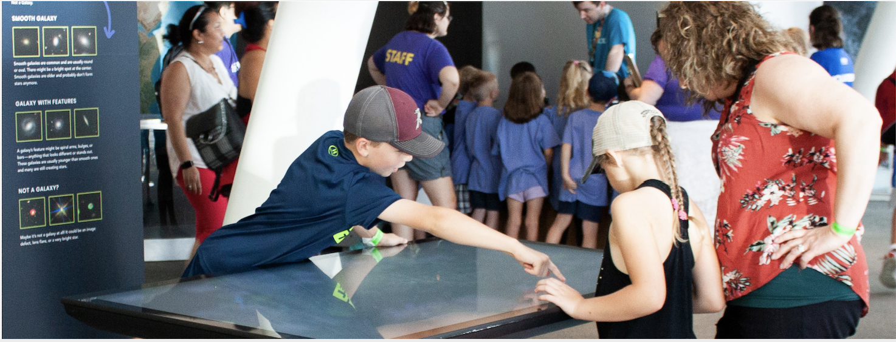
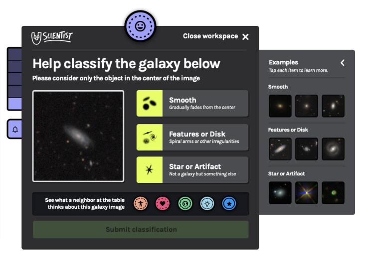

tldr;
In this project, I collaborated with the Adler Planetarium to re-imagine an existing museum exhibit. The exhibit featured an interactive touchtable. With my advisor, I iterated on existing touchtable UI in order to align with reading comprehension of children aged 6-13. Finally, I held feedback sessions with 25 middle school youth to refine exhibit prototypes and design.
Introduction
This project was a collaboration between the Adler Planetarium and Northwestern University. The team consisted of my advisors Dr. Mike Horn and Dr. Laura Trouille, and myself. This project was active from August 2021 to June 2022. It was a continuation of previous work by Obiorah et al. The previous team had designed and evaluated an exhibit at the Adler titled “U!Scientist”.

Visitors interacting with U!Scientist. Credit: Obiorah et al., 2021
Original Design
The exhibit consisted of an interactive touchtable that prompted visitors to classify images of galaxies based on shape, size, and other characteristics. Visitors could gather around the table at one of 6 classification stations that looked like this:

Close-up of original U!Scientist exhibit user interface
Images were pulled from the Zooniverse Galaxy Zoo dataset. By engaging with U!Scientist, vistors are helping scientists classify huge numbers of images. The exhibit is part of a larger movement called people-powered research.
Design challenges
Based on the evaluation and insights from the Adler team, we identified that children struggled to use the existing exhibit without help from adults. Obiorah et al. suggested that the UI and instructional materials could be simplified to better suit a younger audience.
The goal of our project was to explore how to make the U!Scientist exhibit more engaging for younger visitors. In particular, the Adler was interested in cultivating meaningful experiences for students visiting the planetarium during field trips.
Before deciding how to tackle this task, I identified a few challenges that I saw as particularly relevant to designing for kids:
-
Images in the dataset have low resolution – shapes can be ambiguous. This makes the images difficult to classify with confidence.
-
The task is open-ended – users receive no feedback regarding the accuracy of their classifications after they are submitted.
-
The task is individualized – there is no forcing function to make users talk to others or make decisions together.
These attributes make these image classifcation tasks difficult for anyone, but I hypothesized that younger users would especially struggle.
Participatory research approach
We opted to work closely with middle school students to understand their perspective on the exhibit and rapidly prototype new designs together. Our research plan was influenced by theories of participatory design-research (Bang and Vossoughi, 2016) and Guha et al.’s (2004, 2013) method of Cooperative Inquiry.
Participatory design research calls upon researchers to remove barriers between the researcher and ‘the researched’ to address structural inequality. Cooperative Inquiry outlines specific techniques for co-designing technology with children.
Methods v1
Our team partnered with a local non-profit that runs a STEM-based afterschool program for K-8 students. Working with faciliators from the program, I created a tentative 8-week activity plan to introduce students to people-powered research and the Adler’s design challenge. I also secured funding and transportation for a field trip to the plantarium. I sought to position students as designers themselves, rather than users.
As an initial activty to get students thinking about classifying galaxies, I designed a quiz that took the essential elements of the classification task and gamified it. Users could vote for which shape best fit the image in real-time using phones or tablets. Afer the 30 second vote concludes, users can see the popular choice.

This approach had a few benefits. For one, it removed much of the scientific jargon that might be inaccessible to kids. Second, the quiz-based game increased the visibility of other people’s choices. This encouraged kids to consider how their peers might be voting. Additionally, by introducting a social component, it created an opportunity for debate surrounding the most popular choice.
Unfortunately due to the pandemic, attendance was too low to go ahead with our program. At this point, we went back to the drawing board.
Methods v2
We decided to hold a 2-hour feedback session as a different afterschool program for 6-8th graders. The structure of the program allowed children to freely move between different activity stations, including a cooking station, a ping-pong table, and others.
We set up two protoypes and struck up conversations with middle schoolers about the activities and their interest in astronomy. The first prototype involved a stack of printed galaxy images and a categories on the wall. Students were asked to place each image in the category they felt it best fit:

Students could tape images onto the wall based on their shape
Our second prototype was a variation on the first idea. Instead of taping galaxy images to the wall, we asked kids to use tokens to “vote” for the shape of each galaxy image, displayed on a laptop screen:

Students could vote by placing a token in the box based on the galaxy’s shape
Findings
During our feedback session, students had mixed reactions to our prototypes. Between the two, students seemed to gravitate towards the wall-based prototype. Small groups formed as students tried to understand the task. A few asked us if this was some kind of game.
In one instance, a student, who we’ll call J, had been hanging out near the wall-based prototype for a while. I had a chance to show J the basics of the image classification task. After a bit, J started talking to students who had just walked over.
J exclaimed to their peers, “Let me show you how this works!”. J went on to show their peers how to categorize one of the images.
J also pointed out other images on the wall that they had previously placed. One student questioned whether J had categorized the image correctly. At this point they looked to me, the researcher, for confirmation, and I explained that sometimes it was hard to tell and that they should just do their best. They debated for a while, before moving on to another activity.
Take-aways
Based on this initial feedback session, I made the following conclusions for future work:
-
Increasing the visibility of the task, and the progress other people have made is important for drawing people in.
-
Creating opportunities for visitors to share and discuss decisions with others may help address the open-ended nature of the task.
I believe that designs that uphold these qualities, coupled with simplified language and signage, will improve engagement among younger visitors.
Acknowledgements
This work was made possible by support from the Segal Design Cluster Fellowship at Northwestern University. Many thanks to my advisors, Dr. Mike Horn and Dr. Laura Trouille, as well as the entire Adler team and supporting non-profits.